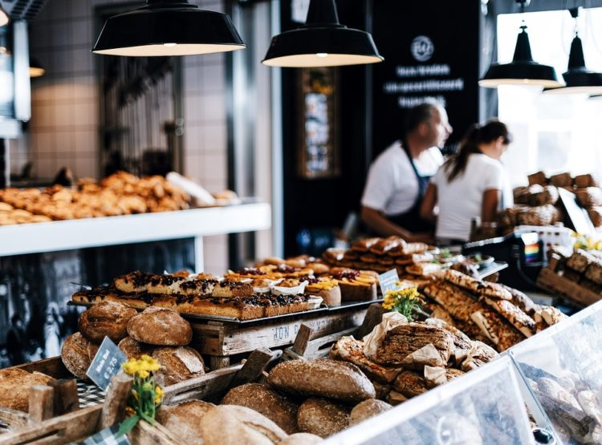
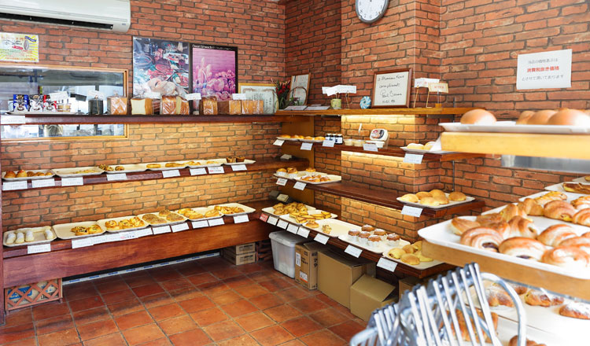
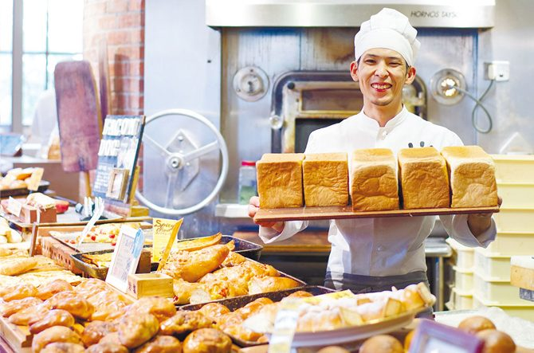
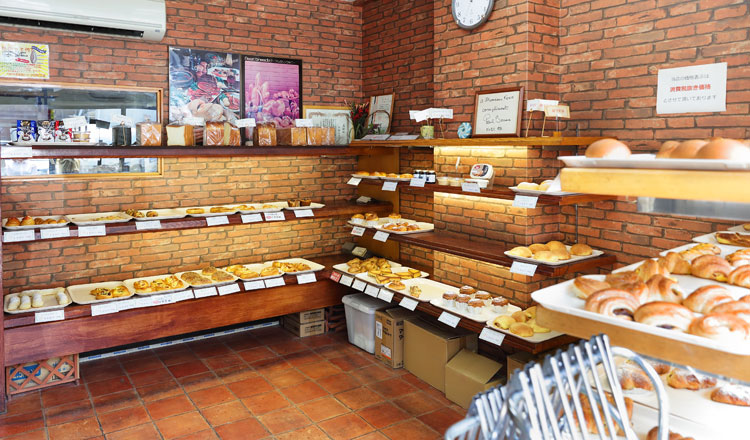
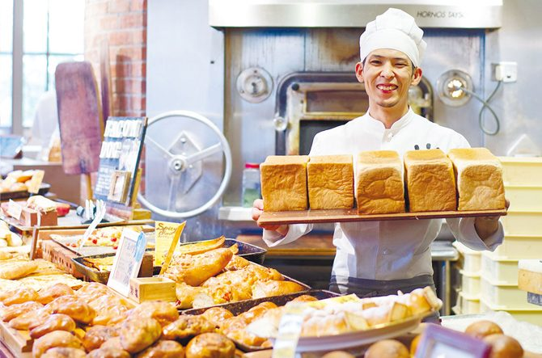
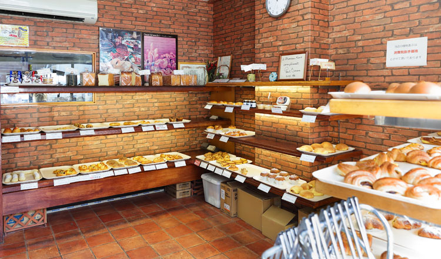
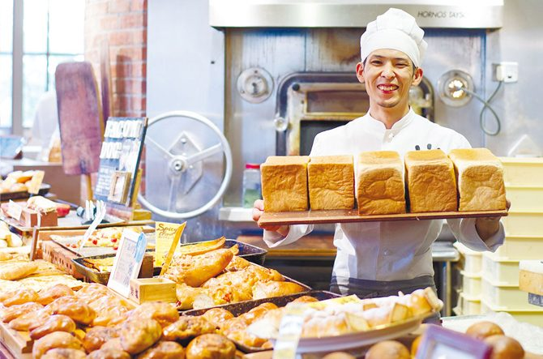

MENU
STORY
ATMOSPHERE
ACCESS&INFO
NEWS

 
愛知で粉からパンを
全て手作りで焼き続けるベーカリー
愛知・清須市で倉庫だった建物をリノベーションしたベーカリー。 焼き立てのパンの香りとともに引き寄せられる店内と運河沿いのテラスでは、
こだわりのパンと併設のキッチンから届くフレッシュなデリやサンドイッチ、 ケーキなどのスイーツを楽しめます。
栄と名古屋駅前にもお店を構え、 フランス出身の職人が毎日朝から晩までパンを焼き続けます

 


